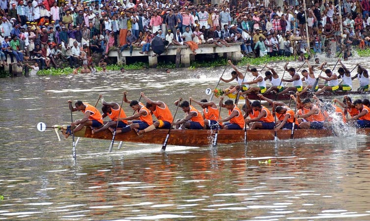
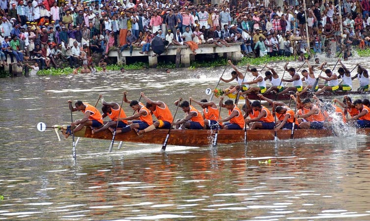
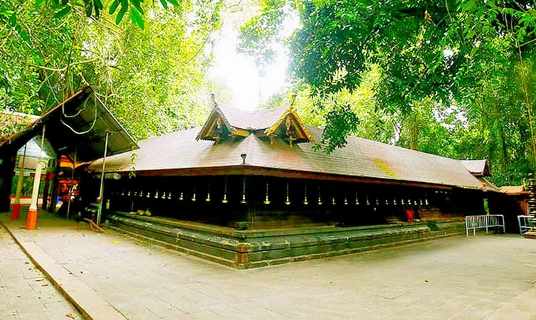

MAIN ATTRACTIONS
Kuttanad backwaters
One of the best places to visit in Alleppey is Kuttanad Backwaters. This isn’t a place, it’s a phenomenon. It is a spectacular lagoon, surrounded by the beauty of lakes, rivers, canals, misty mountains and ethereal landscapes. The experience of floating along the pristine backwaters on a houseboat is inexplicable. You will have to live it to know it! The place is also known as the ‘Rice bowl of Kerala,’ for its stunning rice plantations. If you are in Alleppey for a day, then this place should be your entire itinerary.


Aleppey beach
Glistening sands, crystal clear water, beautiful waves, enchanting sunrise, and sunset is what makes the Alappuzha or the Alleppey beach one of the best places to visit in Alleppey. This stunningly beautiful beach is known for its vast, endless stretches, thereby proving as a getaway for couples as well as families.
Kumarakom bird sanctuary
Spread over 14 acres, the Kumarakom Sanctuary is situated on the banks of the beautiful Lake Vembanad. You can witness a wide variety of birds, from the Himalayas, Siberia and all around the world. Some of these birds are a Siberian stork, egret, darter, heron, golden woodpeckers, and teal. If you want to watch migratory birds, then the best time to visit the sanctuary is between November and February. Nature is found in abundance in this sanctuary.
 

Nehru trophy snake boat race
Held in the memory of Jawaharlal Nehru, this boat race is unlike any other boat racing activity you may have seen before. The Nehru Trophy Snake Boat Race, also known as Vallam Kali, is an annual competition that takes place every August on a part of Lake Vembanad. It is one of the cultural highlights of the state, so plan your visit accordingly if it is your desire to see and experience this boat race.
Mannarashala temple
This is one of the unique places to visit in Alleppey. Mannarasala Sree Nagaraja Temple, as the name suggests, is a temple devoted to snakes. In fact, it is actually an important place of worship for the devotees of the serpent god or Nagaraja. The Mannarasala Temple is the biggest of its kind in Kerala and is considered to be a powerful place of worship.
